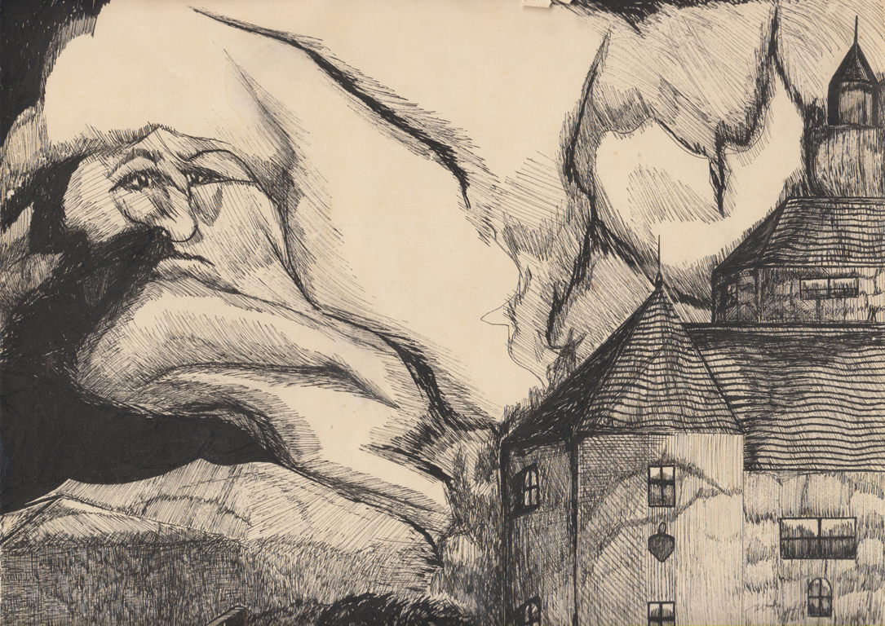

The Doors
The Doors were an American rock band formed in Los Angeles in 1965, with vocalist Jim Morrison, keyboardist Ray Manzarek, guitarist Robby Krieger, and drummer John Densmore. They were among the most controversial and influential rock acts of the 1960s; mostly due to Morrison's lyrics and voice, along with his erratic stage persona, and the group was widely regarded as an important part of the era's counterculture. The band took its name from the title of Aldous Huxley's book The Doors of Perception, itself a reference to a quote by William Blake. After signing with Elektra Records in 1966, the Doors with Morrison released six albums in five years, some of which are considered among the greatest of all time, including their self-titled debut (1967),[6] Strange Days (1967),[7] and L.A. Woman (1971). They were one of the most successful bands during that time and by 1972 the Doors had sold over 4 million albums domestically and nearly 8 million singles. Morrison died in uncertain circumstances in 1971. The band continued as a trio until disbanding in 1973. They released three more albums in the 1970s, two of which featured earlier recordings by Morrison, and over the decades reunited on stage in various configurations. In 2002, Manzarek, Krieger and Ian Astbury of the Cult on vocals started performing as "The Doors of the 21st Century". Densmore and the Morrison estate successfully sued them over the use of the band's name. After a short time as Riders on the Storm, they settled on the name Manzarek–Krieger and toured until Manzarek's death in 2013. The Doors were the first American band to accumulate eight consecutive gold LPs. According to the RIAA, they have sold 33 million albums in the United States and over 100 million records worldwide, making them one of the best-selling bands of all time. The Doors have been listed as one of the greatest artists of all time by magazines including Rolling Stone, which ranked them 41st on its list of the "100 Greatest Artists of All Time". In 1993, they were inducted into the Rock and Roll Hall of Fame.
Origins (July 1965 – August 1966)
The Doors logo, designed by an Elektra Records assistant, first appeared on their 1967 debut album. The Doors began with a chance meeting between acquaintances Jim Morrison and Ray Manzarek on Venice Beach in July 1965. They recognized one another from when they had both attended the UCLA School of Theater, Film and Television. Morrison told Manzarek he had been writing songs. As Morrison would later relate to Jerry Hopkins in Rolling Stone, "Those first five or six songs I wrote, I was just taking notes at a fantastic rock concert that was going on inside my head. And once I'd written the songs, I had to sing them." With Manzarek's encouragement, Morrison sang the opening words of "Moonlight Drive": "Let's swim to the moon, let's climb through the tide, penetrate the evening that the city sleeps to hide." Manzarek was inspired, thinking of all the music he could play to accompany these "cool and spooky" lyrics. Manzarek was currently in a band called Rick & the Ravens with his brothers Rick and Jim, while drummer John Densmore was playing with the Psychedelic Rangers and knew Manzarek from meditation classes. Densmore joined the group later in August, 1965. Together, they combined varied musical backgrounds, from jazz, rock, blues, and folk music idioms. The five, along with bass player Patty Sullivan, and now christened the Doors, recorded a six-song demo on September 2, 1965, at World Pacific Studios in Los Angeles. The band took their name from the title of Aldous Huxley's book The Doors of Perception, itself derived from a line in William Blake's The Marriage of Heaven and Hell: "If the doors of perception were cleansed, everything would appear to man as it is: infinite". In late 1965, after Manzarek's two brothers left, guitarist Robby Krieger joined. From February to May 1966, the group had a residency at the "rundown" and "sleazy" Los Angeles club London Fog, appearing on the bill with "Rhonda Lane Exotic Dancer". The experience gave Morrison confidence to perform in front of a live audience, and the band as a whole to develop and, in some cases, lengthen their songs and work "The End" and "Light My Fire" into the pieces that would appear on their debut album. Manzarek later said that at the London Fog the band "became this collective entity, this unit of oneness ... that is where the magic began to happen." The group soon graduated to the more esteemed Whisky a Go Go, where they were the house band (starting from May 1966), supporting acts, including Van Morrison's group Them. On their last night together the two bands joined up for "In the Midnight Hour" and a twenty-minute jam session of Them's "Gloria". On August 10, 1966, they were spotted by Elektra Records president Jac Holzman, who was present at the recommendation of Love singer Arthur Lee, whose group was with Elektra Records. After Holzman and producer Paul A. Rothchild saw two sets of the band playing at the Whisky a Go Go, they signed them to the Elektra Records label on August 18 — the start of a long and successful partnership with Rothchild and sound engineer Bruce Botnick. The Doors were fired from the Whisky on August 21, 1966, when Morrison added an explicit retelling and profanity-laden version of the Greek myth of Oedipus during "The End".Legacy
Beginning in the late 1970s, there was a sustained revival of interest in the Doors which created a new generation of fans. The origin of the revival is traced to the release of the album An American Prayer in late 1978 which contained a live version of "Roadhouse Blues" that received considerable airplay on album-oriented rock radio stations. In 1979 the song "The End" was featured in dramatic fashion in the film Apocalypse Now, and the next year the best-selling biography of Morrison, No One Here Gets Out Alive, was published. The Doors' first album, The Doors, re-entered the Billboard 200 album chart in September 1980 and Elektra Records reported the Doors' albums were selling better than in any year since their original release. In September 1981, Rolling Stone ran a cover story on Morrison and the band, with the title "Jim Morrison: He's Hot, He's Sexy and He's Dead." In response a new compilation album, Greatest Hits, was released in October 1980. The album peaked at No. 17 in Billboard and remained on the chart for nearly two years. A star for The Doors on the Hollywood Walk of Fame, Los Angeles, California. The revival continued in 1983 with the release of Alive, She Cried, an album of previously unreleased live recordings. The track "Gloria" reached No. 18 on the Billboard Top Tracks chart and the video was in heavy rotation on MTV. Another compilation album, The Best of the Doors was released in 1987 and went on to be certified Diamond in 2007 by the Recording Industry Association of America for sales of 10 million certified units. A second revival, attracting another generation of fans, occurred in 1991 following the release of the film The Doors, directed by Oliver Stone and starring Val Kilmer as Morrison. Stone created the script from over a hundred interviews of people who were in Jim Morrison's life. He designed the movie by picking the songs and then adding the appropriate scripts to them. The original band members did not like the film's portrayal of the events. In the book The Doors, Manzarek states, "That Oliver Stone thing did real damage to the guy I knew: Jim Morrison, the poet." In addition, Manzarek claims that he wanted the movie to be about all four members of the band, not only Morrison. Densmore said, "A third of it's fiction." In the same volume, Krieger agrees with the other two, but also says, "It could have been a lot worse." The film's soundtrack album reached No. 8 on the Billboard album chart and Greatest Hits and The Best of the Doors re-entered the chart, with the latter reaching a new peak position of No. 32.
People Are Strange
The Doors

"Original Drawing by mariavarg(img1)", copyright©: mariavarg
Click on image to enlarge